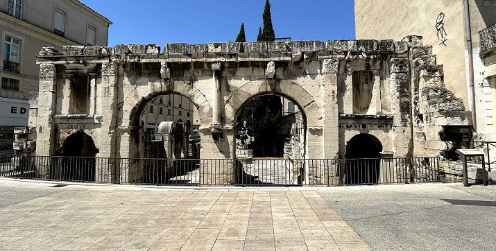
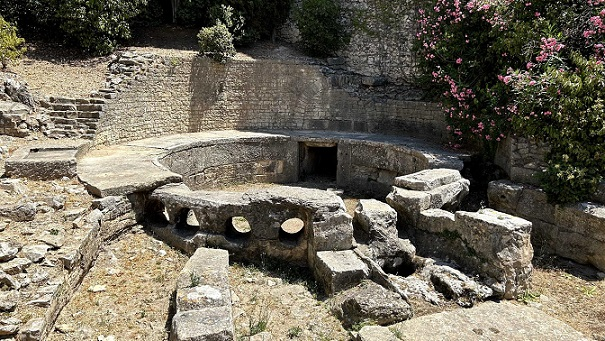
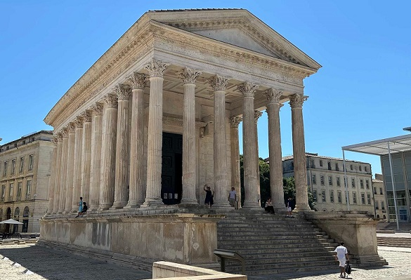
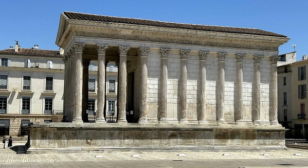
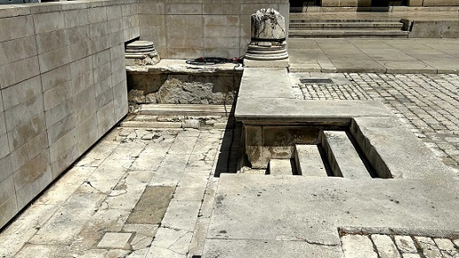
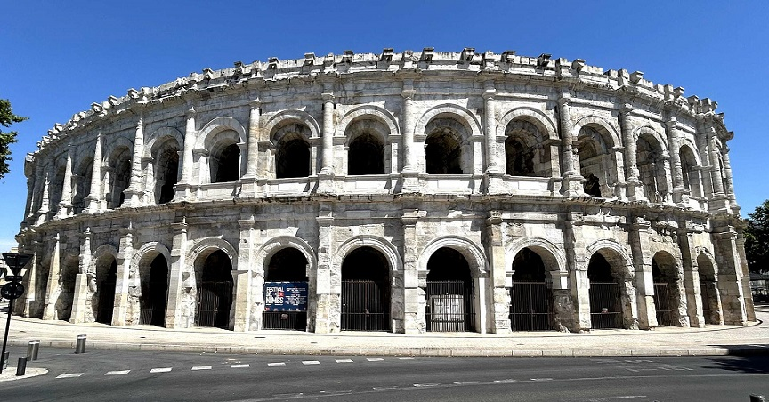
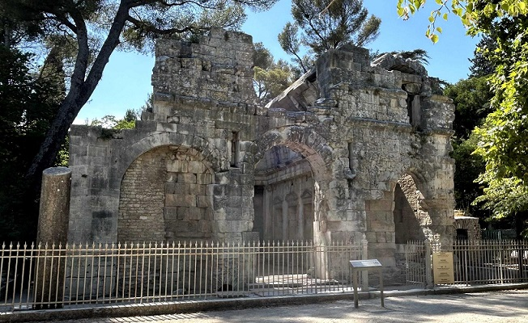
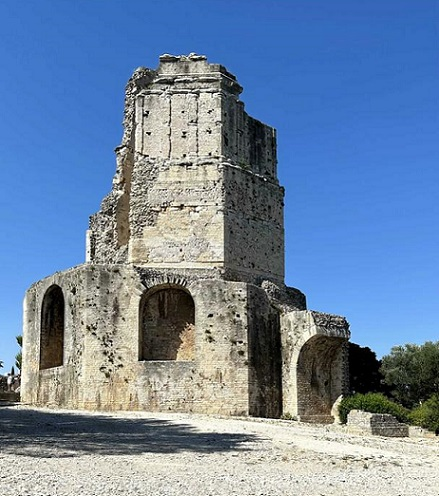

|
N I M E S |
||||
|
En el 118 a.e.c, Cneus Domitius Ahenobarbus, partió de Roma llegando a la Galia por la cima del Monte Genèvre en los Alpes. Domitius recorre la ruta de Aníbal y establece un eje terrestre que permita las comunicaciones y se edifican guarniciones para proteger a los primeros colonos romanos, como Narbonne. Esta ruta llevará su nombre: la Vía Domitia. Rápidamente se convirtió en una vía de comunicación y de comercio, la vía más antigua de Francia. Permitirá posteriormente a Roma la organización a su imagen de todo el sur de la Galia, repartiendo las tierras agrícolas a los colonos romanos (catastro), construyendo nuevas ciudades. Además los intercambios entre Roma y las ciudades coloniales, que se desarrolló a lo largo de la vía, activó la vida económica local. Antiguo oppidium, hacia el año 50 a.e.c, Nimes se convierte en colonia romana, como a si lo prueban las monedas donde figura la leyenda: "Col-Nem", la colonia latina de Nimes, Colonia Augusta Nemausus. Años más tarde se construyeron los edificios públicos y un santuario. Augusto ordena construir una muralla de 6km, realizada con sillares de piedra y reforzada con 14 torres, el recinto englobaba una superficie de 220 hectáreas aproximadamente. Se conservan dos de sus entradas, la Puerta de Francia y la Puerta de Augusto. Se sabe que la ciudad tenia su Curia, Teatro y un Gimnasio. Nimes tuvo una época dorada de tres siglos, hasta que a finales del siglo III las amenazas bárbaras empiezan a sentirse y la ciudad posteriormente es saqueada. Por Nimes pasaba la Vía Domitia, hacia los pirineos y enlazaba con nuestra Vía Augusta.
La
vía Domitia
penetraba en Nimes por el sureste (las actuales carretera y calle de Beaucaire),
y se dirigía hacia el foro tomando el trazado de la calle Nationale y saliendo
de la aglomeración por los barrios del suroeste. Representaba el eje mayor
este-oeste (decumanus maximus).
La entrada oriental de la ciudad estaba en la Puerta de Augusto (cardus maximus). El cocodrilo es el emblema de la ciudad de Nimes, se encuentra en una fuente que recuerda la conquista de Egipto por las legiones romanas.
LA PUERTA DE AUGUSTO La puerta de Arlés es también
conocida como puerta de Augusto, era parte de la muralla que rodeaba la ciudad
romana. Uno de los recintos fortificados más grandes de la Galia romana.

CASTELLUM AQUAE El repartidor de aguas puede apreciarse en la
calle Lampeze próxima al castillo de Vauban. Fue descubierto en 1844 y es uno de
los mejor conservados del mundo. Tiene 6 metros de diámetro y el volumen de agua
transportada por el acueducto era de 125.000m3 al día.

La Maison Carrée es uno de los templos mejor
conservados. Mide 26m de largo y 15 de ancho, su altura es de 17m en la punta
del frontón.


El templo era elemento fundamental del
foro, zona de la que aún se ven restos de la columnata del pórtico, en la misma
plaza en la que se halla el monumento.

|
||||
|
EL ANFITEATRO La arena de Nimes es uno de los
anfiteatros mejor conservados del mundo romano. Data del siglo I.

TEMPLO DE DIANA El llamado Templo de Diana es un antiguo
edificio romano del siglo I a.e.c., construido durante el reinado del emperador
Augusto.
 |
||||
|
LA TORRE MAGNA La Torre Magna, fue construida sobre los
cimientos de un edificio galo. Data del año 15 a.e.c. Es la única torre que se
mantiene en pie de las 80 que formaban parte de las murallas romanas.
|
||||
|

|
||||
|
***********************
En febrero de 2021, una excavación preventiva próxima al templo romano, La Casa Cuadrada, ha sacado a la luz los restos de dos domus romanas de los siglos I y II, una de las cuales presentaba en el suelo de una de sus estancias una lujosa decoración de "opus sectile".
|
||||